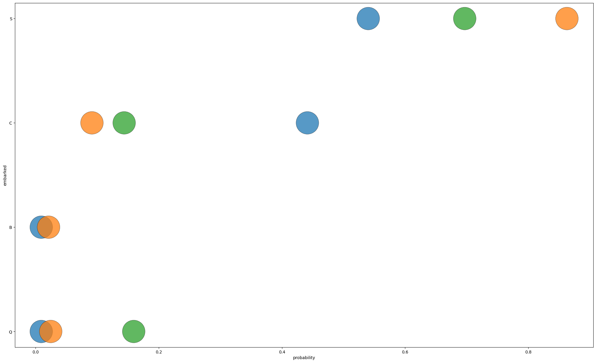

In this practice activity you’ll continue to work with the titanic dataset in ways that flex what you’ve learned about both data wrangling and data visualization.
# Import the titanic dataset hereimport numpy as npimport pandas as pdimport plotnine as p9data_dir ="https://dlsun.github.io/pods/data/"df_titanic = pd.read_csv(data_dir +"titanic.csv")df_titanic
name
gender
age
class
embarked
country
ticketno
fare
survived
0
Abbing, Mr. Anthony
male
42.0
3rd
S
United States
5547.0
7.11
0
1
Abbott, Mr. Eugene Joseph
male
13.0
3rd
S
United States
2673.0
20.05
0
2
Abbott, Mr. Rossmore Edward
male
16.0
3rd
S
United States
2673.0
20.05
0
3
Abbott, Mrs. Rhoda Mary 'Rosa'
female
39.0
3rd
S
England
2673.0
20.05
1
4
Abelseth, Miss. Karen Marie
female
16.0
3rd
S
Norway
348125.0
7.13
1
...
...
...
...
...
...
...
...
...
...
2202
Wynn, Mr. Walter
male
41.0
deck crew
B
England
NaN
NaN
1
2203
Yearsley, Mr. Harry
male
40.0
victualling crew
S
England
NaN
NaN
1
2204
Young, Mr. Francis James
male
32.0
engineering crew
S
England
NaN
NaN
0
2205
Zanetti, Sig. Minio
male
20.0
restaurant staff
S
England
NaN
NaN
0
2206
Zarracchi, Sig. L.
male
26.0
restaurant staff
S
England
NaN
NaN
0
2207 rows × 9 columns
1. Filter the data to include passengers only. Calculate the joint distribution (cross-tab) between a passenger’s class and where they embarked.
class embarked
1st S 0.540123
C 0.441358
B 0.009259
Q 0.009259
2nd S 0.862676
C 0.091549
Q 0.024648
B 0.021127
3rd S 0.696756
Q 0.159379
C 0.143865
Name: embarked, dtype: float64
The proportion of 3rd class passengers that embarked at Southampton was 0.6968
The proportion of Southampton passengers were in 3rd class was 0.5405
3. Make a visualization showing the distribution of a passenger’s class, given where they embarked.
Discuss the pros and cons of using this visualization versus the distributions you calculated before, to answer the previous questions.
# Code hereimport seaborn as snsimport matplotlib.pyplot as pltimport numpy as npplt.rcParams['figure.figsize'] = [25,15]plot = sns.scatterplot(data = df_dist, x ='probability', y ='embarked', hue ='class', legend =False, alpha =0.75, edgecolor ='black', linewidth =0.5, s =3000, zorder =3)

The pro of the visualization over the distribution, is that you can visually see the distribution of the values. A con is that we can easily determine which class and emarkment has what probability.